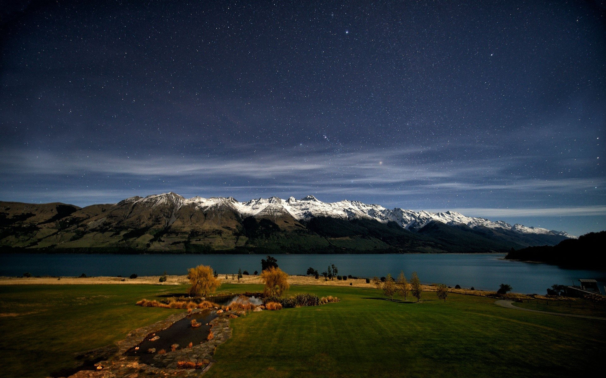

阿尔卑斯山脉
阿尔卑斯山脉（英语Alps）位于欧洲中南部，覆盖了意大利北部、法国东南部、瑞士、列支敦士登、奥地利、德国南部及斯洛文尼亚。阿尔卑斯山脉自亚热带地中海海岸法国的尼斯附近向北延伸至日内瓦湖，然后再向东北伸展至多瑙河上的维也纳。 阿尔卑斯山脉呈弧形，长1200千米，宽130~260千米，平均海拔约3000米，总面积大约为22万平方公里。其中有82座山峰超过4000米的海拔，最高峰是勃朗峰，海拔4810米，位于法国、意大利和瑞士的交界处。 阿尔卑斯山脉地处温带和亚热带纬度之间，成为中欧温带大陆性湿润气候和南欧亚热带夏干气候的分界线。高峰全年寒冷，在海拔2000米处年平均气温为0℃。山地年降水量一般为1200～2000毫米，但因地而异。海拔3000米左右为最大降水带。高山区年降水量超过2500毫米，背风坡山间谷地只有750毫米。


